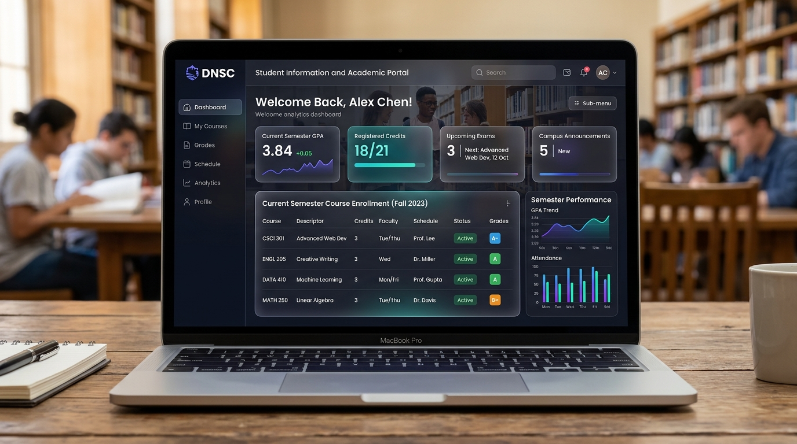

Academic Capstone

DNSC Student Information & Academic Portal
An integrated student portal designed for Davao del Norte State College. Provides curriculum checklist evaluation, automated prerequisite checking, real-time GPA trends, and online course pre-enrollment.
PHP
MySQL
JavaScript
HTML5/CSS3
Online Presence & Profiles
Connect with me across GitHub, LinkedIn, and professional social platforms.
GitHub Profile
Explore my repositories, code commits, academic programming assignments, and ongoing open-source development projects on GitHub.
LinkedIn Profile
Connect with me on LinkedIn to review my professional endorsements, BSIT academic journey, skills network, and career opportunities.
Social Media & Direct Channels
Reach out across social media channels for networking, academic discussions, or web design collaborations: